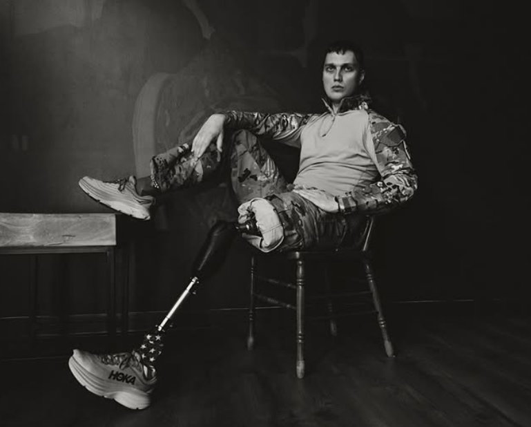

Oksana Kami: WARRIORS
Chicago Grand Gallery is honored to present WARRIORS, a powerful photographic series by Oksana Kami portraying Ukrainian defenders who have endured the realities of war and are now rebuilding their lives.
Every Ukrainian defender the artist encounters carries a story that challenges comprehension. These are stories of survival, loss, resilience, and transformation. Through intimate portraiture, Kami reveals not only the physical consequences of war, but also the profound inner strength of those who have faced it directly.
Many of the individuals featured in this exhibition came to the United States for rehabilitation through Revived Soldiers Ukraine @revivedsoldiersukraine a nonprofit organization providing advanced medical care to wounded Ukrainian defenders — often taking on the most complex and critical cases.
Yet this exhibition is not about injury. It is about presence.
Even when their bodies bear the marks of war, these individuals remain extraordinarily powerful. Their beauty lies not in perfection, but in depth — in what they have endured, what they continue to navigate, and in the courage with which they confront a new reality.
WARRIORS invites viewers to reconsider strength. It asks us to reflect on responsibility and to recognize that resilience is not abstract. It is human.